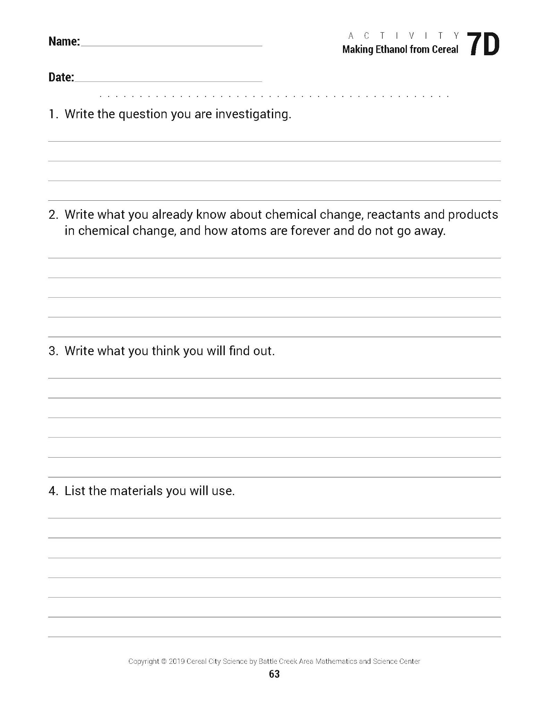
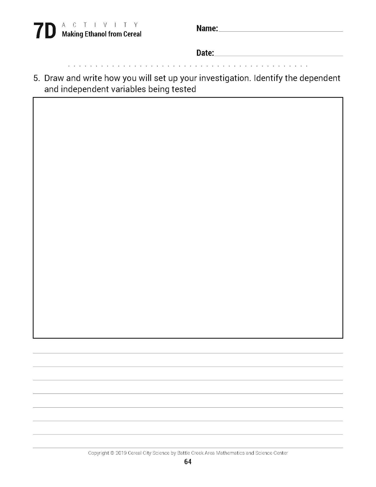
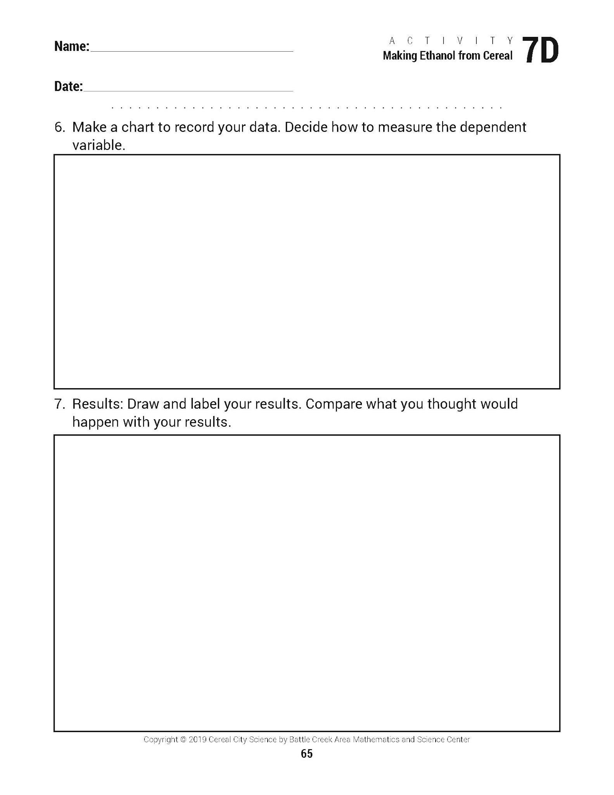
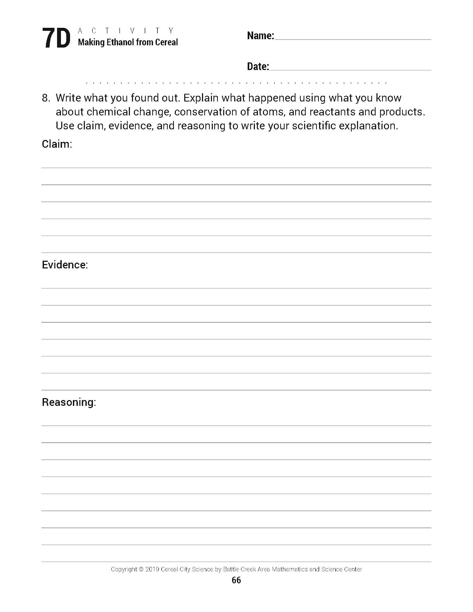
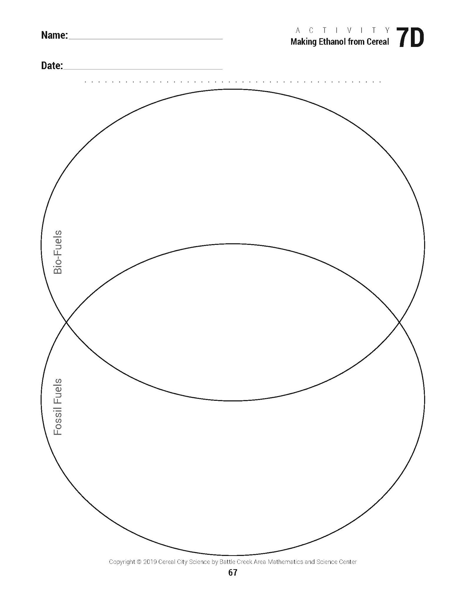

Activity 7D • Making Ethanol from CerealJournal page 63 of 84
Name: ______________________________Date: _______________
1. Write the question you are investigating.
2. Write what you already know about chemical change, reactants and products in chemical change, and how atoms are forever and do not go away.
3. Write what you think you will find out.
4. List the materials you will use.
Compare with original journal page 63
This is the unmarked scanned page for checking original diagrams, exact wording, or layout. The editable HTML content is above.

Activity 7D • Making Ethanol from CerealJournal page 64 of 84
Name: ______________________________Date: _______________
5. Draw and write how you will set up your investigation. Identify the dependent and independent variables being tested
Compare with original journal page 64
This is the unmarked scanned page for checking original diagrams, exact wording, or layout. The editable HTML content is above.

Activity 7D • Making Ethanol from CerealJournal page 65 of 84
Name: ______________________________Date: _______________
6. Make a chart to record your data. Decide how to measure the dependent variable.
7. Results: Draw and label your results. Compare what you thought would happen with your results.
Compare with original journal page 65
This is the unmarked scanned page for checking original diagrams, exact wording, or layout. The editable HTML content is above.

Activity 7D • Making Ethanol from CerealJournal page 66 of 84
Name: ______________________________Date: _______________
8. Write what you found out. Explain what happened using what you know about chemical change, conservation of atoms, and reactants and products. Use claim, evidence, and reasoning to write your scientific explanation.
Claim:
Evidence:
Reasoning:
Compare with original journal page 66
This is the unmarked scanned page for checking original diagrams, exact wording, or layout. The editable HTML content is above.

Activity 7D • Making Ethanol from CerealJournal page 67 of 84
Name: ______________________________Date: _______________
Compare with original journal page 67
This is the unmarked scanned page for checking original diagrams, exact wording, or layout. The editable HTML content is above.
